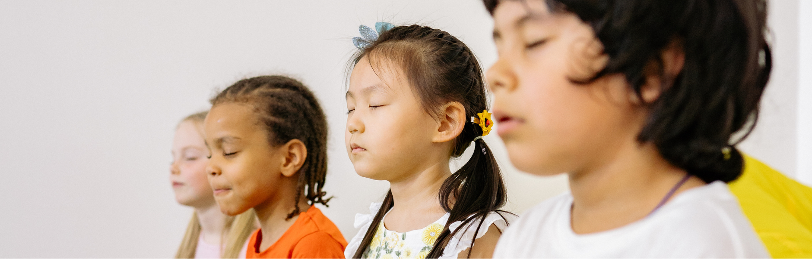
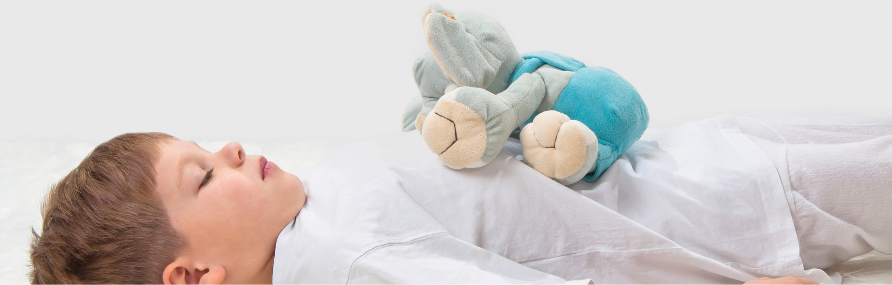

Kennst du diese Momente im Kita-Alltag, in denen alles laut wird? Kinder rennen, Stimmen überschlagen sich, ein Streit entsteht, Tränen fließen. Und du spürst selbst, wie dein Körper angespannt ist. Genau hier beginnt die Kraft der Atmung — als Anker. Für dich. Für die Kinder. Für den ganzen Raum.
lieber kurz & täglich
in den Alltag zu integrieren
zum direkt Nachmachen
Warum Atmung für Kleinkinder so wertvoll ist
Kleine Kinder erleben ihre Gefühle intensiv. Wut, Freude, Angst oder Überforderung kommen oft wie eine Welle — sie wissen noch nicht, wie sie damit umgehen sollen. Die Atmung gibt ihnen eine erste Erfahrung:
- Ich kann mich selbst beruhigen
- Ich kann meinen Körper spüren
- Ich darf zur Ruhe kommen
Atemübungen im Vergleich — welche eignet sich wann?
| Übung | So geht's | Ideal wann |
|---|---|---|
| Bienenatmung | Hände auf Ohren, einatmen, beim Ausatmen summen | Nach Aufregung, vor der Ruhephase |
| Wellenatmung | Einatmen: Arme hoch, Ausatmen: Arme langsam senken | Bei Unruhe, bei Übergängen |
| Federatmen | Auf eine Feder blasen, die langsam durch die Luft schwebt | Für jüngere Kinder, spielerischer Einstieg |
| Bauchatemübung | Legen, Kuscheltier auf Bauch, spüren wie es sich hebt und senkt | Ruhephase, nach dem Mittagessen |
| Sternatemzug | Mit den Fingern einen Stern nachfahren, bei jedem Zacken ein- oder ausatmen | Vor intensiveren Situationen, Einzelbegleitung |
So integrierst du Kinderyoga Atmung in euren Alltag
Du brauchst keinen extra Raum, kein perfektes Setting und kein langes Konzept. Du brauchst nur dich — und kleine, bewusste Momente.
Atempausen im Alltag einbauen
Nutze Übergänge — genau dort, wo oft Unruhe entsteht:
- Nach dem Toben
- Vor dem Essen
- Nach einem Streit
- Vor der Ruhezeit
„Kommt, wir machen eine kleine Atemreise zusammen." — Schon dieser Satz verändert die Energie.
Mit Bildern arbeiten
Kinder lieben Geschichten. Sie brauchen Bilder, keine Technik. Mach die Atmung lebendig:
- „Wir summen wie kleine Bienen"
- „Wir pusten eine Feder durch die Luft"
- „Wir sind Wellen im Meer"
So wird Atmung spielerisch — und genau das ist der Schlüssel.
Weniger ist mehr
Zwei Minuten reichen völlig aus. Es geht nicht darum, lange still zu sitzen — es geht darum, kleine Erfahrungen zu schaffen.
Lieber kurz und regelmäßig als selten und lang.

Eine komplette Kinderyoga-Einheit zum Nachmachen
Hier ist ein konkreter Ablauf — direkt umsetzbar, ohne Vorbereitung.
Ankommen
Setzt euch in einen Kreis, vielleicht auf den Teppich. Sprich ruhig und langsam:
Nimm dir Zeit. Lass Stille entstehen.
Atemübung: Die Bienenatmung
„Wir sind jetzt kleine Bienen." — Hände auf die Ohren legen, tief durch die Nase einatmen, beim Ausatmen summen. Mach es vor, die Kinder machen mit.
Das Summen wirkt sofort beruhigend. Der Körper vibriert sanft. Viele Kinder beginnen zu lächeln. Wiederholt das drei- bis fünfmal.
Bewegungsübung: Die Welle
„Jetzt sind wir das Meer." — Beim Einatmen Arme nach oben, beim Ausatmen Arme langsam nach unten sinken lassen. Langsam. Fließend.
Hier verbinden sich Atmung und Bewegung — das hilft besonders unruhigen Kindern.
Ruhephase
Legt euch hin oder bleibt sitzen. Legt ein Kuscheltier auf den Bauch und spürt, wie es sich hebt und senkt.
Vielleicht machst du leise Musik an. Oder du bleibst einfach still. Diese Momente sind so kraftvoll — und so oft unterschätzt.
Abschluss
Bedanke dich bei den Kindern: „Das habt ihr richtig schön gemacht." Diese Wertschätzung bleibt.

Konkrete Tipps für deinen Kita-Alltag
Du musst nicht perfekt sein
Kinder spüren Echtheit, nicht Perfektion. Wenn du ruhig wirst, werden sie ruhiger.
Rituale schaffen Sicherheit
Jeden Tag zur gleichen Zeit — eine kleine Atempause wird Teil eures Alltags. Kinder lieben Wiederholung.
Weniger erklären, mehr vormachen
Sprich wenig. Zeig viel. Kinder lernen durch Nachahmung.
Klein anfangen
Du musst nicht sofort eine ganze Einheit machen. Starte mit einer Übung am Tag.
Was sich durch regelmäßige Atemübungen verändern kann
Die Gruppe wird ruhiger
Konflikte werden weniger intensiv
Kinder finden schneller zurück in die Balance
Du selbst fühlst dich entspannter